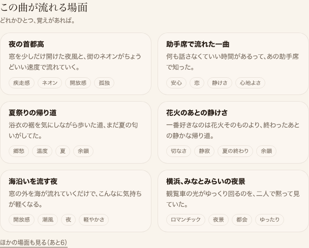
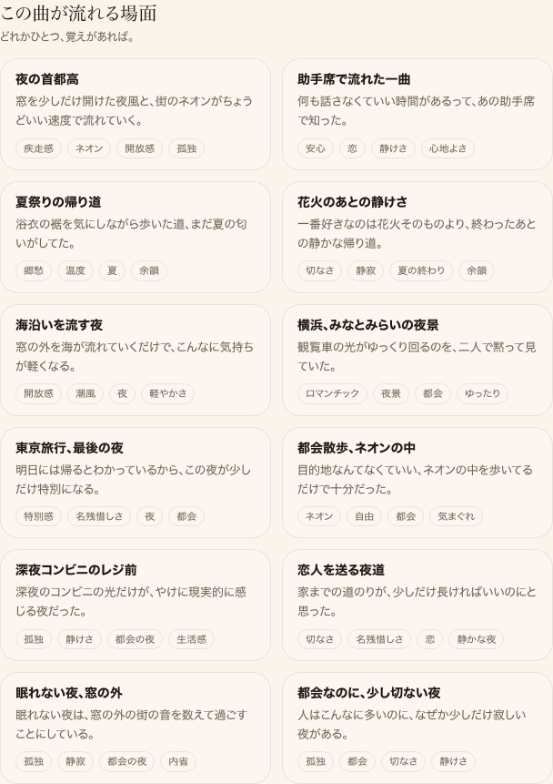

<li>として書き出され、未展開分はCSSのhidden(display:none)で隠すだけに変更済み。検索エンジン・AIクローラーはJSを実行しなくても12本全部を読める。


| 確認項目 | 結果 |
|---|---|
| 本番HTTPステータス | 200 |
| SSR HTMLに12タイトル全件が含まれる | 12/12件 一致 |
| headless ChromiumでのDOM li件数 | 12件 |
| 未展開カードにhiddenクラスが付いている(display:none) | 7〜12件目に確認 |